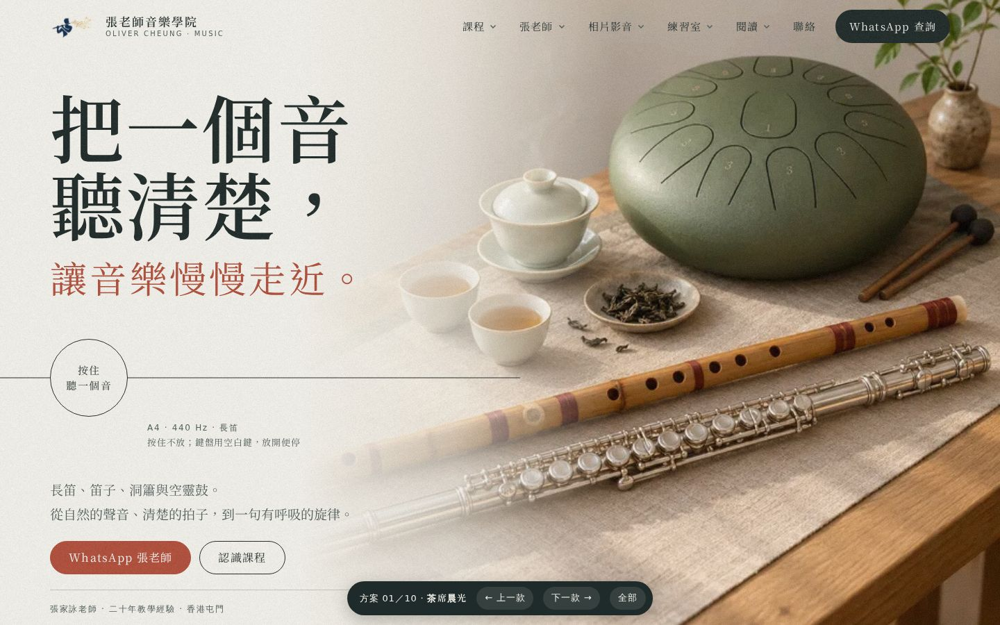
01晨光晨光照進室內，長笛與竹笛並放麻布上，空靈鼓在後（無茶具）。整幅相片做首屏背景。
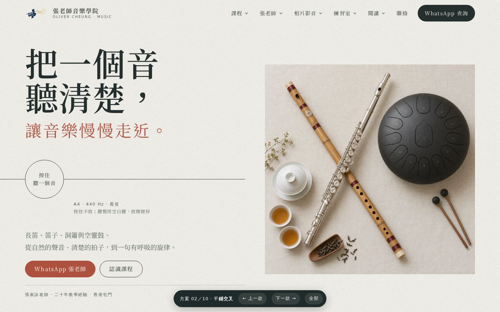
02平鋪交叉俯拍：長笛與竹笛交叉成 X，旁邊空靈鼓、蓋碗、茶葉。右邊方圖。
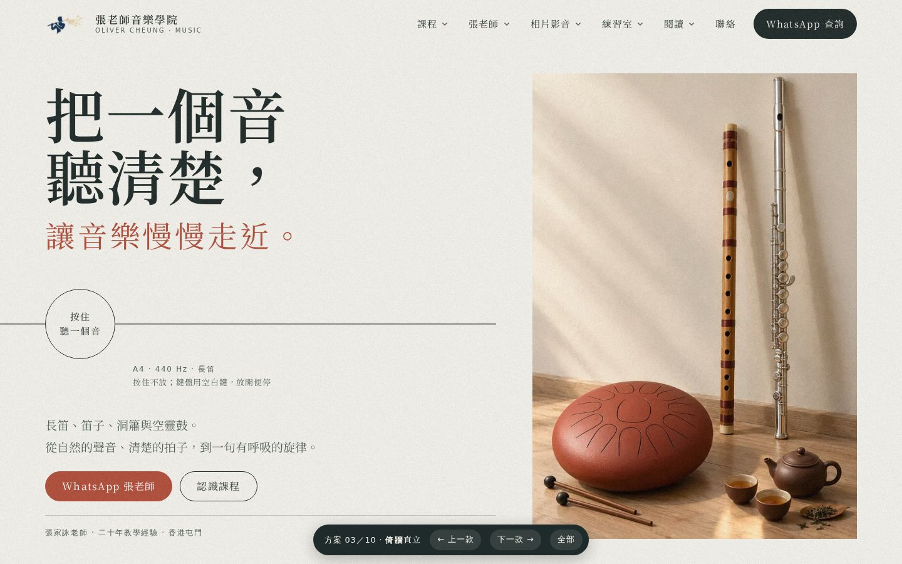
03倚牆直立兩支笛直立倚牆，地上空靈鼓與紫砂壺。右邊高身直圖。
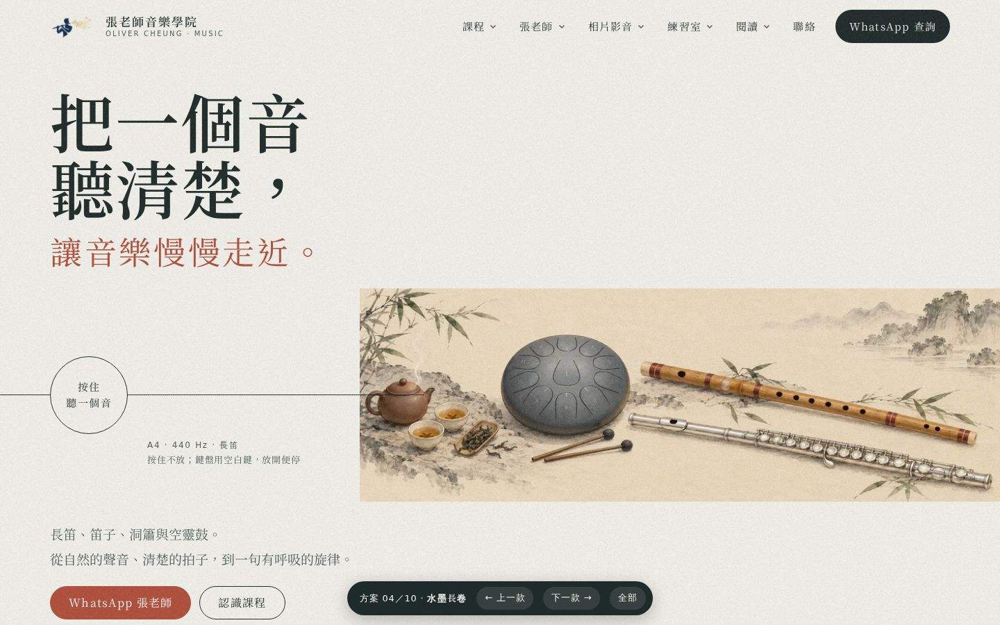
04水墨長卷水墨設色長卷：茶、空靈鼓、竹笛、長笛由左至右。氣流線接入畫卷。
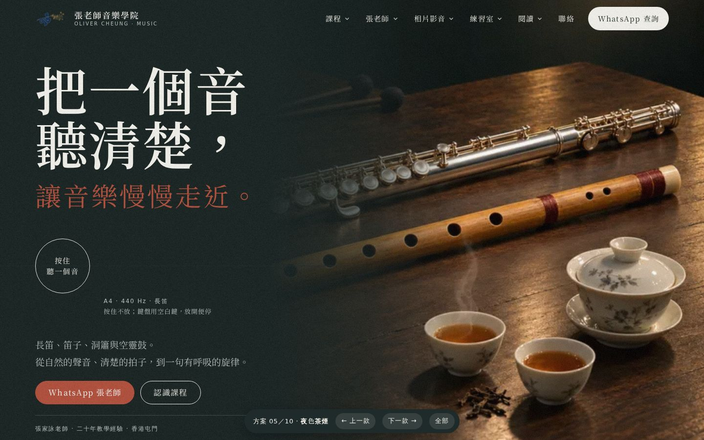
05夜色深色版：聚光燈下長笛與竹笛斜放，空靈鼓在暗處（無茶具）。整幅深色背景。
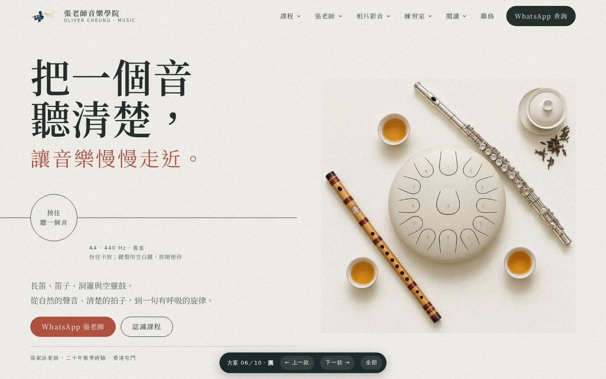
06圓俯拍：空靈鼓在正中，兩支笛與茶杯圍成一圓。右邊方圖。
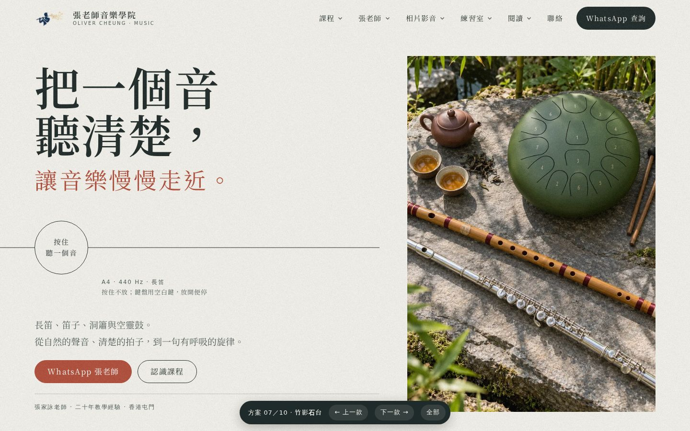
07竹影石台竹影下的石台：兩支笛、空靈鼓、茶壺。右邊直圖，色調清新。
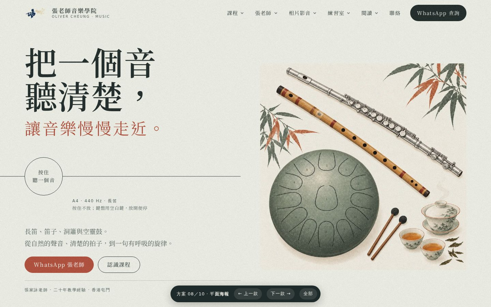
08平面海報平面插畫：墨綠、珊瑚紅、米白三色，海報感。右邊方圖。
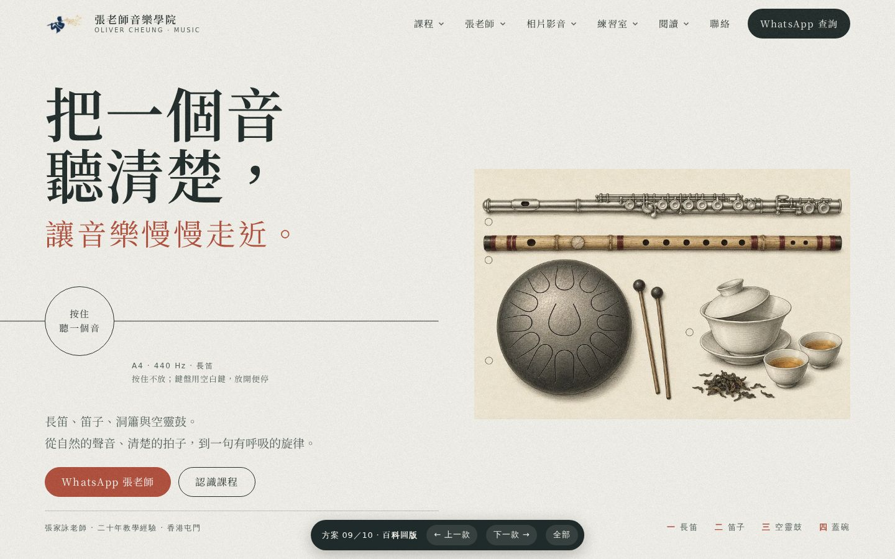
09百科圖版古籍銅版線刻：長笛、竹笛、空靈鼓、蓋碗逐件陳列，下附圖例。
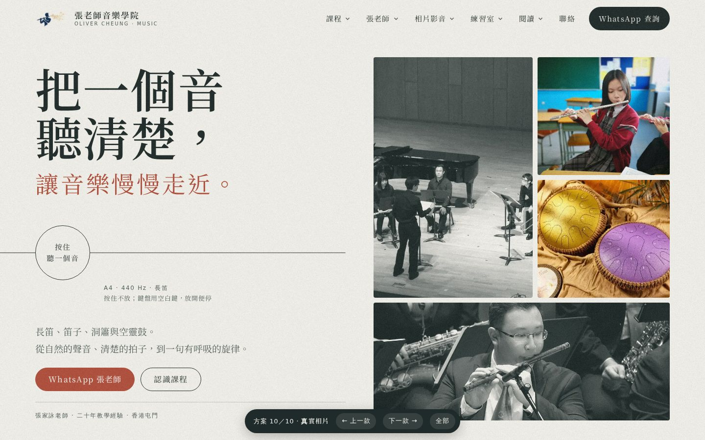
10真實相片全部用舊站真實相片：老師演出、學生吹笛、空靈鼓班，不用 AI 圖。
 11晨光・05構圖
11晨光・05構圖05 的構圖與樂器，配 01 的晨光、米白、淺橡木與麻布配色。
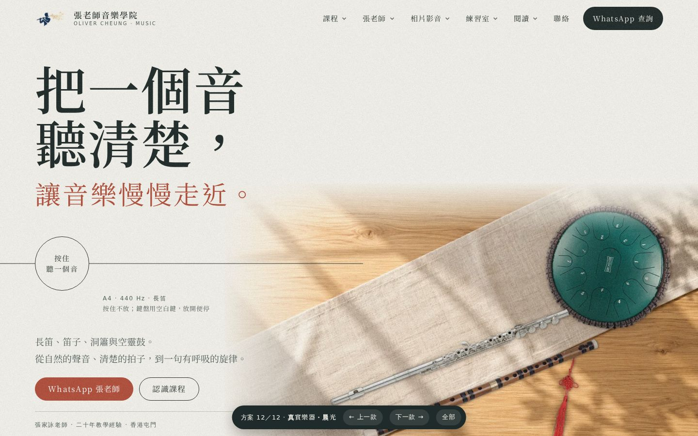
12真實樂器・晨光真實長笛（開孔）、竹笛、HLURU 15 音空靈鼓相片，放在晨光橡木枱與麻布上。